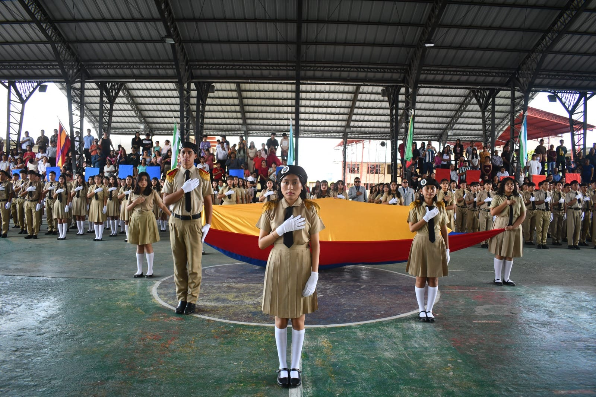

El Colegio de Bachillerato Emiliano Ortega Espinoza es una institución educativa de carácter formativo que tiene como propósito fundamental ofrecer una educación de calidad y calidez, sustentada en enfoques humanísticos, científicos y tecnológicos, orientados al desarrollo integral de los estudiantes. La institución promueve procesos educativos innovadores y pertinentes que fortalecen el aprendizaje significativo y el desarrollo de habilidades intelectuales, sociales y emocionales.
En su quehacer educativo, el colegio impulsa la formación de estudiantes críticos, reflexivos, propositivos y emprendedores, capaces de analizar su realidad, plantear soluciones responsables y contribuir activamente al desarrollo sostenible de su entorno. Se fomenta la productividad, la creatividad y el liderazgo, preparando a los jóvenes para continuar estudios superiores, integrarse al ámbito laboral y ejercer una ciudadanía responsable y participativa.
Asimismo, la institución promueve la práctica de valores éticos y morales como el respeto, la responsabilidad, la honestidad, la solidaridad y la justicia, fortaleciendo la convivencia armónica y el compromiso social. El Colegio de Bachillerato Emiliano Ortega Espinoza mantiene una estrecha coordinación con la comunidad educativa y los actores sociales, consolidando una gestión participativa, inclusiva y orientada al mejoramiento continuo, con el firme compromiso de contribuir a la transformación educativa y al desarrollo de la sociedad.